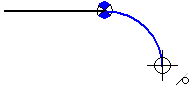

Tangent Arc command
Use the Tangent Arc command  to draw an arc tangent or perpendicular to one or two elements. The first point defines
one end of the arc. If you place the first point on a key point of an element you
want the arc to be tangent or perpendicular to, then the second point defines the
sweep.
to draw an arc tangent or perpendicular to one or two elements. The first point defines
one end of the arc. If you place the first point on a key point of an element you
want the arc to be tangent or perpendicular to, then the second point defines the
sweep.

If you place the first point in free space, then this command works like the Arc by 3 Points command. In this case the first point defines an end point. You can then either define a point on the arc and then the end point, or the end point and then a point on the arc.
Relationships between tangent arcs and tangent lines
Tangent and connect relationships are automatically applied between the endpoint of an arc and line if the arc created is tangent to the line. Tangent and connect relationships are automatically applied between an arc and the endpoint of a line if the line created is tangent to the arc.
Arcs tangent to other elements
These options on the Relationships page of the IntelliSketch dialog box must be set to draw arcs that are tangent to other elements:
-
Point On or End Point must be set to draw arcs that are tangent to other elements.
-
Tangent must be set to draw an arc tangent to two elements.
Arc sweep angle
The arc sweep angle locks at quadrant points (0, 90, 180, and 270 degrees) when you place a tangent arc. This allows you to draw the most common arcs without typing values in the Sweep Angle box.